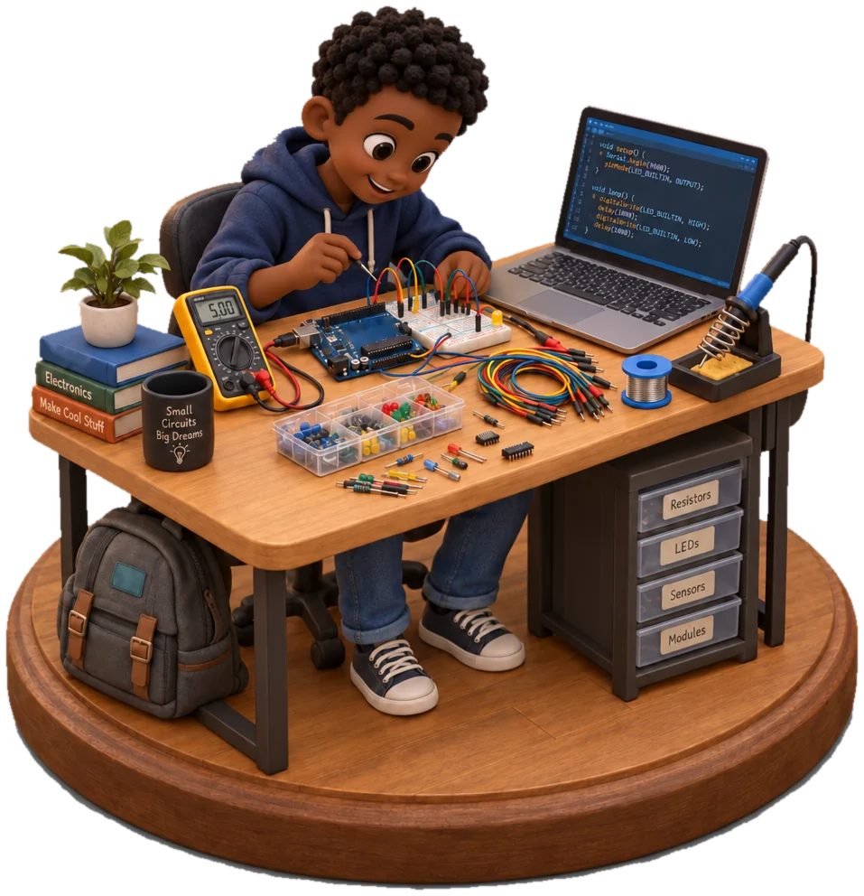

Windows votre système
Windows 10 et 11, 64 bits. L’installateur demande le français ou l’anglais.
Installateur pas encore signé : si SmartScreen s’affiche, « Informations complémentaires » puis « Exécuter quand même ».
Jollof Studio est une application de bureau gratuite pour concevoir, simuler et vérifier de vrais systèmes : montages Arduino et ESP32, circuits pneumatiques, logique, réseaux de bâtiment. On se trompe à l’écran, pas sur le matériel.
Version 0.4 pour Windows et Linux, sous licence AGPL-3.0. La version navigateur câble, simule, vérifie et ouvre les TP ; le téléversement, la compilation C++ et le DWG demandent l’application.

156 composants, 10 cartes, 82 TP guidés, 7 types de projet. En français et en anglais.
Le type choisi décide des plans de travail affichés. Rien d’autre ne s’installe.
Fig. 1. Exemple « Radar de recul », simulation en cours
Beaucoup d’élèves et d’apprentis ingénieurs n’ont ni paillasse, ni cartes, ni vérins, ni baie de brassage. Jollof Studio met tout cela sur un ordinateur, même ancien : on câble, on programme, on simule, on mesure.
L’application ne laisse rien partir vers le réel tant qu’une erreur reste. Le téléversement est bloqué si le montage peut griller. La simulation, elle, montre les fautes : c’est en voyant fumer une LED à l’écran qu’on comprend la résistance.
Elle est écrite à Dakar par Mamadou Sarr (Xelaktech), et publiée sous licence libre.
Un module entier : la conception de réseaux de bâtiment. Et du travail de fond.
Posez une carte, un capteur, un écran. Reliez les broches à la main ou laissez le câblage automatique choisir. Le code est compilé par arduino-cli puis exécuté instruction par instruction sur un processeur émulé : AVR, RP2040, ESP32. Les modules lui répondent comme les vrais.
Trois façons de programmer : des règles en français (« quand… alors… »), des blocs, ou du C++ Arduino. MicroPython sur le Pico. Débogueur pas à pas, traceur, analyseur de bus I2C, SPI et série.
Fig. 2. Le même montage en schéma
Le schéma se dessine tout seul à partir du câblage. Pendant la simulation, chaque nœud affiche sa tension et le courant circule.
Fig. 3. Le vérificateur, exemple « À corriger »
5 erreurs et 1 avertissement, trouvés en quelques millisecondes. Chacune a un code, une cause, une correction. Tant qu’il en reste une, rien ne part vers la carte.
Il essaie chaque état atteignable : boutons appuyés ou relâchés, relais collés, potentiomètres aux butées, chaque sortie à LOW et à HIGH. Dans chaque état, le circuit est calculé et chaque composant comparé aux valeurs limites de sa fiche technique.
erreur[J0301]: LED1 traversée par 75 mA (30 mA au plus)
--> quand UNO D7 = HIGH
= aide : ajoutez une résistance de 220 ΩLa garantie vaut dans le modèle : régime continu, valeurs nominales. Les pointes de courant au démarrage d’un moteur ne sont pas comptées. Ce qui est prouvé, exactement
Distributeurs, vérins, régleurs de débit, capteurs, avec des symboles inspirés de l’ISO 1219. Écrivez le GRAFCET : l’application en tire le programme de la carte ou le Ladder d’un automate virtuel.
Les TP viennent du transport sénégalais : pantographe du TER, porte de bus du BRT, barrière du parking-relais. La machine en 3D suit le vérin, étape par étape.
Fig. 4. Exemple « Vérin électropneumatique »
Vérin 1A, distributeur 5/2, 6 bar. La bobine Y1 et les capteurs B1, B2 sont reliés à la carte du montage : la liste à droite le confirme.
Un projet réseau a un seul modèle et quatre vues : logique, plans, baies, conception. Une prise posée sur le plan est la même dans le tableau des câbles, dans la baie et dans la nomenclature.
Les figures ci-dessous montrent l’exemple livré : un collège de 48 × 17 m sur deux niveaux, 26 pièces, 95 prises, 170 liens permanents, une rocade fibre OM4, 17 points d’accès.
Fig. 5. Rez-de-chaussée du collège, échelle 1:196
Fig. 6. Baie du rez-de-chaussée, face avant
42U, face avant : panneaux, switchs, cœur, fibre, serveur. 886 W, 3 023 BTU/h, 70,6 kg sur 800 admis.
Fig. 7. Couverture Wi-Fi calculée
Affaiblissement UIT-R P.1238, murs selon leur matériau. Objectif −67 dBm. Un calcul, pas une mesure.
Fig. 8. Dimensionnement
À partir des surfaces : 75 postes, 170 prises, 9 panneaux de 24 ports, 6 584 m de cuivre, soit 22 tourets de 305 m. Les règles sont réglables.
Fig. 9. Testeur de certification (simulé)
Lien 0A-A01 : 31,1 m, limite Cat 6A, marge 1,2 dB. La fenêtre l’écrit elle-même : valeurs simulées par un modèle, pas une mesure.
Fig. 10. Tableau des câbles
376 câbles : 170 liens permanents (6 584 m), 203 cordons, 3 rocades. Chaque ligne a son étiquette, ses deux extrémités, sa longueur au tracé et son cheminement. Export CSV ou Excel.
Pour travailler avec l’architecte, le bureau d’études et l’exploitant.
| Format | Import | Export | À savoir |
|---|---|---|---|
| DXF | oui | oui | ASCII ou binaire, R12 à 2018. Calques AIA/NCS ou ISO 13567 à l’export. |
| DWG | oui | oui | Par un convertisseur installé sur l’ordinateur (ODA File Converter ou dwg2dxf). Application de bureau seulement. |
| IFC | IFC4, IFC2X3 | IFC4 | Étages, pièces, murs, équipements. Géométrie simplifiée. |
| Visio (.vsdx) | oui | oui | Import dans le schéma logique. Export d’une page par vue. |
| draw.io | non | oui | Schéma logique, baies, plans d’étage. |
| Excel (.xlsx) | oui | oui | Un onglet par tableau. Au retour, les différences s’acceptent ligne par ligne. |
| NetBox 4 | oui | oui | Comparaison en lecture seule d’abord. Application de bureau seulement. |
| Plan scanné (PNG, JPG) | oui | non | Étalonné par deux points de distance connue. |
| Résultats de testeur | oui | non | Exports CSV, texte ou XML d’un logiciel de gestion de tests. Rangés à part des valeurs simulées. |
| PDF, SVG, CSV | non | oui | Planches avec cartouche, élévations, tableaux, rapport. |
L’application connaît les broches, les tensions et les limites de chacune. Sur huit d’entre elles, le programme compilé tourne sur un processeur émulé.
| Carte | Processeur | Mémoire | Broches | Logique | Radio | Le programme tourne sur |
|---|---|---|---|---|---|---|
| Arduino Uno R3 | ATmega328P, AVR 8 bits, 16 MHz | 32 Ko flash, 2 Ko RAM | 14 numériques (6 PWM), 6 analogiques | 5 V | non | Émulateur AVR (avr8js) |
| Arduino Nano | ATmega328P, AVR 8 bits, 16 MHz | 32 Ko flash, 2 Ko RAM | 14 numériques (6 PWM), 8 analogiques | 5 V | non | Émulateur AVR (avr8js) |
| Arduino Mega 2560 | ATmega2560, AVR 8 bits, 16 MHz | 256 Ko flash, 8 Ko RAM | 54 numériques (15 PWM), 16 analogiques | 5 V | non | Émulateur AVR (avr8js) |
| Raspberry Pi Pico | RP2040, 2 × Cortex-M0+, 133 MHz | 2 Mo flash, 264 Ko RAM | 26 GPIO, 3 analogiques 12 bits | 3,3 V | non | Émulateur RP2040 (rp2040js) |
| ESP32 DevKit V1 | ESP32, 2 × Xtensa LX6, 240 MHz | 4 Mo flash, 520 Ko RAM | 30 broches, ADC 12 bits | 3,3 V | Wi-Fi, Bluetooth | QEMU d’Espressif |
| ESP32 DevKitC (38 broches) | ESP32, 2 × Xtensa LX6, 240 MHz | 4 Mo flash, 520 Ko RAM | 38 broches, ADC 12 bits | 3,3 V | Wi-Fi, Bluetooth | QEMU d’Espressif |
| ESP32-S3 DevKitC-1 | ESP32-S3, 2 × Xtensa LX7, 240 MHz | 8 Mo flash, 512 Ko RAM | 44 broches, USB natif | 3,3 V | Wi-Fi, Bluetooth LE | QEMU d’Espressif |
| ESP32-C3 SuperMini | ESP32-C3, RISC-V, 160 MHz | 4 Mo flash, 400 Ko RAM | 16 broches, USB natif | 3,3 V | Wi-Fi, Bluetooth LE | QEMU d’Espressif |
| ESP8266 NodeMCU | ESP8266, Tensilica L106, 80 MHz | 4 Mo flash | D0 à D8, 1 analogique | 3,3 V | Wi-Fi | Simulateur intégré (programme interprété) |
| Wemos D1 mini | ESP8266, Tensilica L106, 80 MHz | 4 Mo flash | D0 à D8, 1 analogique | 3,3 V | Wi-Fi | Simulateur intégré (programme interprété) |
Chaque étape est validée par l’application : un fil posé, une mesure juste, un ping qui répond. Compte rendu en PDF à la fin.
| Domaine | TP | Exemples |
|---|---|---|
| Électronique | 28 | LED et bouton, loi d’Ohm, feu tricolore, radar de recul |
| Pneumatique | 20 | Commande indirecte, sécurité à deux mains, porte de bus du BRT |
| Logique | 14 | Portes de base, tout en NAND, vote majoritaire |
| Réseau et objets connectés | 20 | Sertir un RJ45 en T568B, budget PoE, VLAN, liaison fibre, MQTT sur ESP32 |
| Total | 82 |
Un tutoriel monte un premier projet à partir de zéro, avec une carte d’aide qui montre où cliquer.
Tout ce que montre cette page est dans l’édition gratuite : simulation, vérificateur, programmation, téléversement, TP, module réseau, exports.
L’édition Pro ajoute seulement les outils de l’enseignant : classes, comptes élèves, devoirs, correction, carnet de notes, présentation pas à pas d’un montage.
Dernière version :
Une fois installée, l’application propose elle-même les mises à jour.
Windows 10 et 11, 64 bits. L’installateur demande le français ou l’anglais.
Installateur pas encore signé : si SmartScreen s’affiche, « Informations complémentaires » puis « Exécuter quand même ».
AppImage pour les distributions de 2022 et après, ou le paquet de votre système.
AppImage : rendez le fichier exécutable (chmod +x), puis lancez-le.
Pas encore livré : l’application doit d’abord être signée et notarisée par Apple.
En attendant : la version navigateur, ou une construction depuis les sources.
Node.js 20 ou plus récent, Rust, et les prérequis de Tauri pour votre système.
git clone https://github.com/xelaktechsn/jollof-studio
cd jollof-studio && npm install
npm run tauri dev # lancer l’application
npm test # la suite de tests
npm run tauri build # installateursAutant les dire ici.
Jollof Studio est publié sous licence AGPL-3.0 : utilisez-le, étudiez-le, améliorez-le. Une licence commerciale existe pour qui ne peut pas suivre l’AGPL.
ContribuerSignaler un problèmeLire l’aide
Construit avec Tauri 2, Rust, Three.js, avr8js, rp2040js, QEMU, ngspice, MicroPython, Blockly, arduino-cli, maisa-core, Vite.